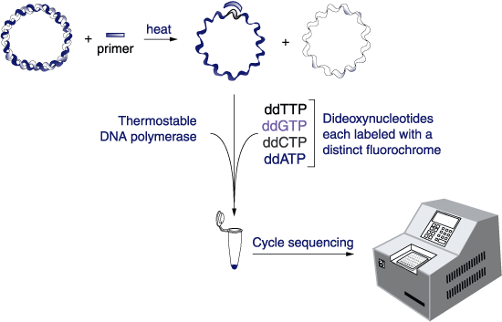
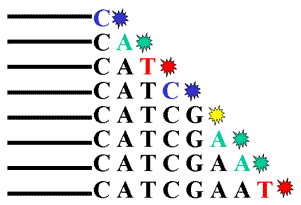
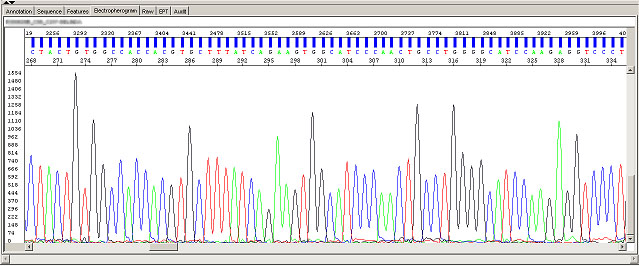
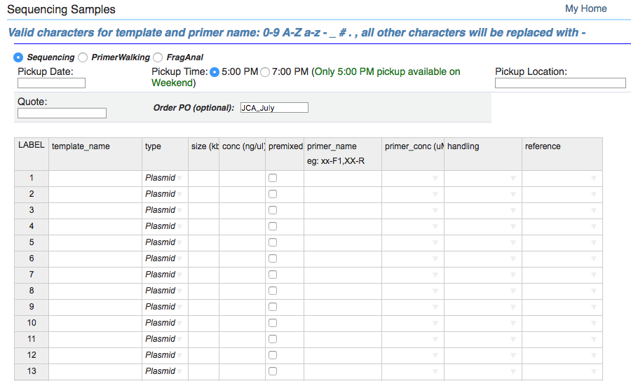
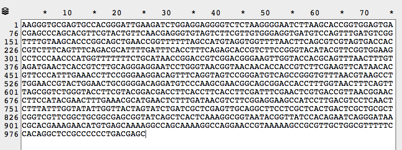

Step by step: Cycle Sequencing tutorial · bench cheatsheet
Always read the trace, not just the sequence. The base calls at the two ends of a read are guesses, and a heterozygous-looking double peak in the middle usually means you picked two colonies at once. What you send and what comes back: ten microlitres of miniprep and three of primer per read, and next day a trace of coloured peaks and a sequence file of base calls.